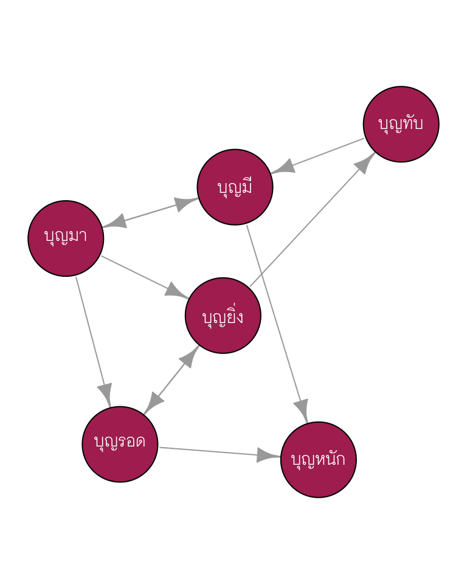
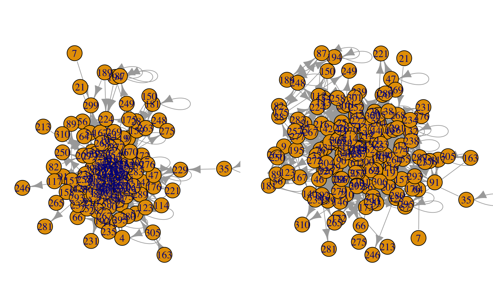
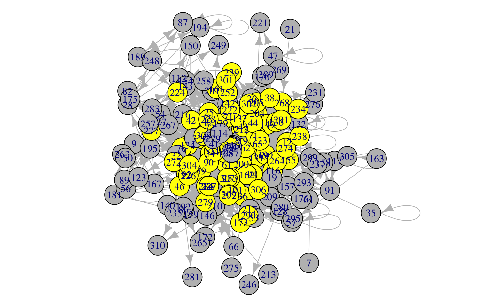
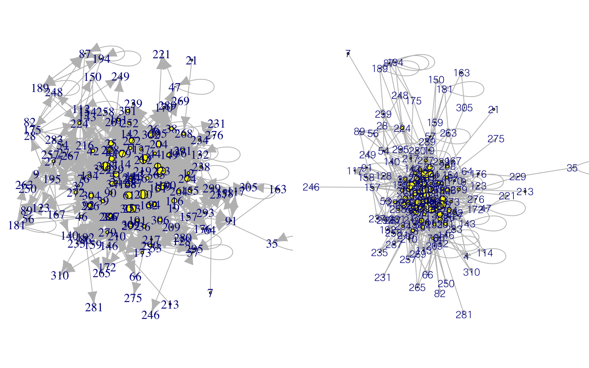
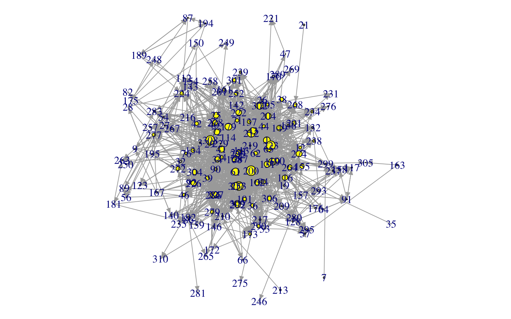
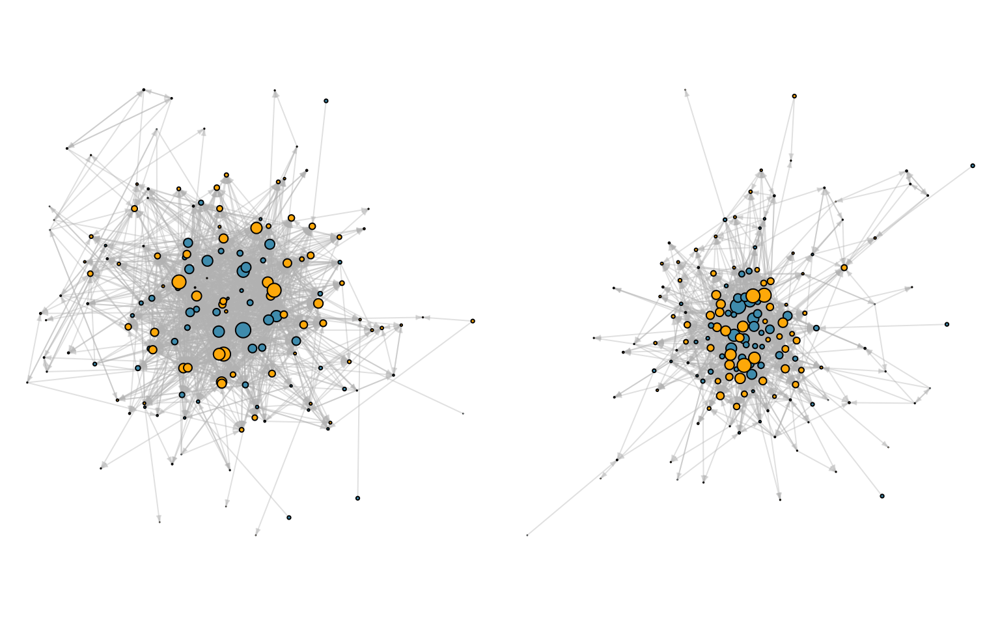
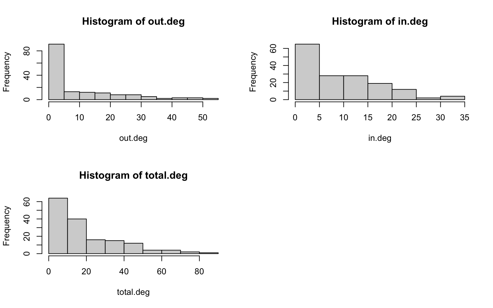

Network analysis and Visualization
สิวะโชติ ศรีสุทธิยากร ภาควิชาวิจัยและจิตวิทยาการศึกษา คณะครุศาสตร์ จุฬาลงกรณ์มหาวิทยาลัย 15 May 2021
Basic Concepts
โครงข่าย (network) เป็นกราฟประเภทหนึ่งที่ประกอบด้วยสมาชิกได้แก่ จุดยอด (vertices) และเส้นเชื่อม (edges) การสร้างแผนภาพโครงข่ายทำให้ผู้วิเคราะห์ได้สารสนเทศเกี่ยวกับลักษณะความเชื่อมโยงหรือความสัมพันธ์กันระหว่างหน่วยข้อมูลที่ทำการวิเคราะห์
โดยปกติผู้วิเคราะห์มักกำหนดคุณลักษณะให้กับทั้งจุดยอดและเส้นเชื่อมเพื่อให้แผนภาพโครงข่ายแสดงสารสนเทศที่มีความชัดเจนและลึกซึ้งมากขึ้นได้ ดังนั้นลักษณะของจุดยอด และเส้นเชื่อมจึงเป็นปัจจัยที่ผู้วิเคราะห์ต้องพิจารณาในการสร้างแผนภาพโครงข่ายแต่ละรูป อีกปัจจัยหนึ่งที่จำเป็นเช่นเดียวกันคือการจัดวางสมาชิกของแผนภาพโครงข่าย (layouts)

จุดยอด (nodes)
จุดยอดอาจเรียกว่า vertices หรือ nodes ก็ได้ เป็นสัญลักษณ์ที่ใช้แทนหน่วยข้อมูลแต่ละหน่วย หรือตัวแปรแต่ละตัวภายในแผนภาพ โดยปกติอาจจำแนก nodes ได้เป็น 2 ประเภทได้แก่
unimodal node
multimodal node

เส้นเชื่อม (edges)
เส้นเชื่อมใช้บ่งชี้ความเชื่อมโยงหรือความสัมพันธ์ระหว่างจุดยอด โดยสามารถจำแนกได้เป็น 2 ประเภทได้แก่ เส้นเชื่อมแบบไม่มีทิศทาง (undirected edges) และเส้นเชื่อมแบบมีทิศทาง (directed edges) ซึ่งทำให้แผนภาพโครงข่ายจำแนกออกเป็น 2 ประเภทตามลักษณะของเส้นเชื่อมในแผนภาพได้แก่
undirected network
directed network
ทิศทางของเส้นเชื่อมทำให้ผู้วิเคราะห์สามารถอธิบายลักษณะของความสัมพันธ์ระหว่างจุดยอดได้ลึกซึ้งมากยิ่งขึ้น
นอกจากทิศทางแล้ว เส้นเชื่อมยังมี attribute ที่สำคัญอีกตัวหนึ่งคือการให้น้ำหนักของเส้นเชื่อม ซึ่งทำให้สามารถจำแนกแผนภาพโครงข่ายออกได้อีก 2 ประเภท ได้แก่
unweighted network
weight network
น้ำหนักที่แตกต่างกันของเส้นเชื่อมจะใช้แสดงขนาดหรือระดับความสัมพันธ์หรือความเชื่อมโยงกันระหว่างจุดยอดที่อยู่ในแผนภาพ
เส้นเชื่อมนอกจากใช้เชื่อมโยงระหว่างจุดยอดที่แตกต่างกันแล้ว ยังใช้เชื่อมโยงภายในจุดยอดเดียวกันได้ด้วย เรียกเส้นเชื่อมประเภทนี้ว่า Loops
Network Layouts
การจัดวางสมาชิกในภาพแผนโครงข่ายสามารถทำได้หลายลักษณะ โดยอาจจำแนกออกเป็น 2 ประเภทใหญ่ ได้แก่
hierarchical layout: ลำดับการจัดเรียงของจุดยอดเป็นสารสนเทศ
spring or energy layout: ระยะห่างระหว่างจุดยอดเป็นสารสนเทศ อาจใช้แสดงความใกล้ชิดหรือความแตกต่างระหว่างหน่วยข้อมูลที่อยู่ในแต่ละจุดยอด สารสนเทศดังกล่าวสามารถนำไปประยุกต์ใช้เพื่อวิเคราะห์ได้หลากหลายวัตถุประสงค์
Data Structures
ข้อมูลนำเข้าสำหรับสร้างแผนภาพโครงข่ายจำแนกได้เป็น 2 ลักษณะ ได้แก่ adjacency matrix และ edge list
adjacency matrix
บุญหนัก บุญทับ บุญมา บุญรอด บุญมี บุญยิ่ง
บุญหนัก 1 0 0 0 0 0
บุญทับ 0 1 0 0 1 0
บุญมา 0 0 0 1 1 1
บุญรอด 1 0 0 1 0 1
บุญมี 1 0 1 0 0 0
บุญยิ่ง 0 1 0 1 0 0เป็นเมทริกซ์จัตุรัส (square matrix) ที่ row และ column ของเมทริกซ์แทนจุดยอดทั้งหมดภายในแผนภาพ และสมาชิกภายในเมทริกซ์จะกำหนดเป็นตัวเลข 0 หรือ 1 เพื่อใช้แทนความเชื่อมโยงกันระหว่างจุดยอดแต่ละคู่

ข้อดีของการนำเข้าข้อมูลแบบ adjacency matrix คือผู้วิเคราะห์สามารถใช้การดำเนินการของเมทริกซ์เพื่อจัดกระทำหรือคำนวณค่าสถิติที่ใช้สรุปสารสนเทศต่าง ๆ จากแผนภาพโครงข่ายได้ เช่น centrality เป็นต้น
อย่างไรก็ตามการเก็บข้อมูลในลักษณะของ adjacency matrix อาจทำได้ยากในเชิงปฏิบัติ
Edgelist
ข้อมูลนำเข้าแบบ edgelist มีส่วนประกอบหลัก 3 ส่วนได้แก่
Sender node หรือ node ที่เป็นจุดเริ่มต้น
Target node หรือ node ที่เป็นเป้าหมายหรือเชื่อมโยงกับ sender node
Attribute ของเส้นเชื่อมในแต่ละคู่ sender กับ target
Sender Target Weight
1 A B 1
2 B F 1
3 C C 2
4 D A 3
5 E D 1
6 F E 1รูปต่อไปนี้เปรียบเทียบข้อมูลนำเข้าระหว่าง adjacency matrix กับ edgelist ของ network รูปเดียวกัน

Generate Network using R
ใน R มี package หลักที่ผู้วิเคราะห์สามารถใช้สนับสนุนการวิเคราะห์โครงข่าย (network analysis) 3 ตัวได้แก่
First Try
สมมุติว่าคำถามวิจัยคือ เมื่อจัดการเรียนการสอนแบบ online นักเรียนมีปฏิสัมพันธ์ซึ่งกันและกันระหว่างเรียนหรือไม่ และมีปฏิสัมพันธ์กับเพื่อนใหม่ในชั้นเรียนหรือไม่?
การวิเคราะห์นี้จะสร้าง network ขึึ้นมา 2 แผนภาพ
เพื่อวิเคราะห์โครงข่ายของเพื่อนในชั้นเรียน
เพื่อวิเคราะห์โครงข่ายของการมีปฏิสัมพันธ์ในชั้นเรียน
# install.packages('igraph')
library(igraph)
friend <- read.csv("/Users/siwachoat/Library/Mobile Documents/com~apple~CloudDocs/github/ssiwacho/2758501/ssiwacho.github.io/network/personallity_know_edgelist.csv")
interaction <- read.csv("/Users/siwachoat/Library/Mobile Documents/com~apple~CloudDocs/github/ssiwacho/2758501/ssiwacho.github.io/network/interaction_edgelist.csv")- สำรวจชุดข้อมูลเบื้องต้น
head(friend) Source Target Weight
1 181 19 1
2 181 150 1
3 181 159 1
4 181 181 1
5 181 263 1
6 134 1 1head(interaction) Source Target Weight
1 32 223 1
2 32 301 1
3 32 24 1
4 32 137 1
5 32 155 1
6 36 253 1- สร้าง graph object จาก edgelist
friend_graph <- graph.data.frame(friend, directed = TRUE)
interaction_graph <- graph.data.frame(interaction, directed = TRUE)- ทดลองวาด graph ที่สร้างขึ้น
set.seed(123)
par(mar = c(0.5, 0.5, 0.5, 0.5), mfrow = c(1, 2))
plot(friend_graph, layout = layout_with_fr)
plot(friend_graph, layout = layout_with_kk)
แผนภาพที่ได้ดูรู้เรื่องมั้ย?
degree
degree เป็นค่าสถิติของ node ภายใน network มีค่าเท่ากับจำนวนเส้นเชื่อมทั้งหมดของ node นั้นกับ node อื่น ๆ ในการวิเคราะห์โครงข่ายหนึ่ง ๆ จึงจะมีสถิติ degree เท่ากับจำนวน node ทั้งหมดภายในโครงข่าย

การวิเคราะห์การแจกแจงของ degree ทำให้ผู้วิเคราะห์ได้สารสนเทศเกี่ยวกับความเชื่อมโยงหรือความสัมพันธ์โดยรวมระหว่างหน่วยข้อมูลภายในโครงข่าย
ในกรณีที่เป็นโครงข่ายแบบมีทิศทาง degree สามารถจำแนกได้เป็น 2 ประเภท ได้แก่
in-degree คือจำนวนเส้นเชื่อมที่โยงเข้าหา node
out-degree คือจำนวนเส้นเชื่อมที่โยงออกจาก node

out.deg <- degree(friend_graph, mode = "out")
in.deg <- degree(friend_graph, mode = "in")
total.deg <- degree(friend_graph, mode = "total")
deg <- data.frame(out.deg, in.deg, total.deg)
summary(deg) out.deg in.deg total.deg
Min. : 0.000 Min. : 0.000 Min. : 1.00
1st Qu.: 0.000 1st Qu.: 4.000 1st Qu.: 6.00
Median : 3.500 Median : 8.000 Median :14.00
Mean : 9.861 Mean : 9.861 Mean :19.72
3rd Qu.:16.000 3rd Qu.:15.000 3rd Qu.:30.00
Max. :52.000 Max. :34.000 Max. :85.00 Second Try
ลองปรับแต่งแผนภาพ
# กำหนด attribute ให้กับ node
V(friend_graph)$color <- "grey"
V(friend_graph)[deg$in.deg > 8]$color <- "yellow"
# กำหนด attribute ให้กับ edge
E(friend_graph)$color <- "grey"
par(mar = rep(0.1, 4))
plot(friend_graph, layout = layout_with_kk)
Third Try
ลองปรับอีกครั้ง
V(friend_graph)$size = degree(friend_graph, mode = "in")/5
par(mfrow = c(1, 2), mar = rep(0.1, 4))
plot(friend_graph, layout = layout_with_kk)
plot(friend_graph, vertex.label.family = "ChulaCharasNew", edge.arrow.size = 0.25)
ref: plot.igraph
friend_graph2 <- simplify(friend_graph, remove.multiple = TRUE, remove.loops = TRUE)
par(mar = rep(0.1, 4))
plot(friend_graph2, layout = layout_with_kk, edge.arrow.size = 0.5)
forth Try
นำข้อมูล attribute ของ node ซึ่งก็คือหน่วยข้อมูลแต่ละหน่วยเข้ามาร่วมวิเคราะห์เพิ่มเติม
friend_attribute <- read.csv("/Users/siwachoat/Library/Mobile Documents/com~apple~CloudDocs/github/ssiwacho/2758501/ssiwacho.github.io/network/Personally_Nodelist.csv")head(friend_attribute) Source Status
1 19 Researcher
2 181 Researcher
3 150 Researcher
4 159 Researcher
5 263 Researcher
6 1 Researchertable(friend_attribute$Status)
Graduate Student Researcher
83 75 ลองนำข้อมูลสถานะของผู้เรียนเข้ามาเป็น attribute ของ node ภายในแผนภาพ
V(friend_graph2)$color <- ifelse(friend_attribute[V(friend_graph2), 2] == "Researcher",
"#4d9dba", "#ffb600")
E(friend_graph2)$color <- alpha("grey", alpha = 0.4)
par(mar = rep(0.05, 4), mfrow = c(1, 2))
plot(friend_graph2, layout = layout_with_kk, edge.arrow.size = 0.25, , vertex.label = NA)
plot(friend_graph2, layout = layout_with_fr, edge.arrow.size = 0.25, , vertex.label = NA)
นิสิตลองสร้างแผนภาพปฏิสัมพันธ์ของผู้เรียนด้วยตนเอง
Network Analysis
การวิเคราะหโครงข่ายอาจจำแนกผลการวิเคราะห์ออกเป็นสองส่วนใหญ่ ได้แก่
connectionist features (of the network)
คุณลักษณะที่สนใจวิเคราะห์ในมิตินี้ เช่น
- ความหนาแน่น (density) ความหนาแน่นของเส้นเชื่อมเป็นตัวชี้ที่บอกได้ว่าโครงข่ายที่ทำการวิเคราะห์มีการเชื่อมโยงซึ่งกันและกันมากน้อยเพียงใด ค่าความหนาแน่นมีค่าเท่ากับสัดส่วนของจำนวนเส้นเชื่อมที่เกิดขึ้นจริงต่อจำนวนเส้นเชื่อมที่สามารถเกิดขึ้นได้ทั้งหมด
graph.density(friend_graph2, loop = F)[1] 0.06103362- average path length คือค่าเฉลี่ยของระยะทางหรือจำนวน step ที่สั้นที่สุดจาก node หนึ่งไปยัง node อื่น ๆ ภายใน network ค่าสถิตินี้บ่งชี้ประสิทธิภาพในการติดต่อสื่อสารหรือส่งสารสนเทศซึ่งกันและกันระหว่างหน่วยข้อมูลภายในโครงข่าย

mean_distance(friend_graph2)[1] 2.548821- transitivity or clustering coefficient จำนวน node ที่มีความเชื่อมโยงกันแบบ close triad ต่อจำนวน triad ทั้งหมด

- degree distribution
par(mfrow = c(2, 2))
hist(out.deg)
hist(in.deg)
hist(total.deg)
positional features
คุณลักษณะที่สนใจมีดังนี้
- degree

- closeness centrality มีค่าเท่ากับค่าเฉลี่ยของระยะทางระหว่าง node ที่ทำการวิเคราะห์กับ node อื่น ๆ ที่เชื่อมโยงด้วย

closeness(friend_graph2, mode = "in") 181 134 9 72 212 128
4.056960e-05 9.140768e-05 9.016320e-05 9.147457e-05 9.158348e-05 9.086779e-05
65 76 169 219 131 150
9.143275e-05 9.108298e-05 9.154994e-05 4.031283e-05 9.154156e-05 4.056960e-05
132 56 92 39 21 194
9.109957e-05 8.987148e-05 9.132420e-05 9.141603e-05 4.031283e-05 4.109139e-05
213 40 190 14 43 26
4.031283e-05 9.126586e-05 9.139097e-05 9.144111e-05 9.146620e-05 9.106639e-05
29 27 32 195 200 159
9.126586e-05 9.095870e-05 9.119095e-05 9.101666e-05 9.161704e-05 9.095043e-05
201 71 172 210 216 34
9.099181e-05 9.134088e-05 9.069472e-05 9.107468e-05 9.081003e-05 9.146620e-05
146 89 46 154 204 66
9.103323e-05 8.987956e-05 9.124920e-05 9.086779e-05 9.154994e-05 9.051412e-05
25 57 161 61 179 86
9.153318e-05 9.108298e-05 9.125753e-05 9.154156e-05 9.154994e-05 9.105810e-05
7 113 137 36 189 90
4.031283e-05 9.071940e-05 9.124920e-05 9.128252e-05 4.109139e-05 9.134923e-05
168 94 112 91 12 116
9.139932e-05 9.142439e-05 9.102494e-05 9.071940e-05 9.129919e-05 9.145784e-05
82 54 162 24 101 157
9.035872e-05 9.057151e-05 9.144947e-05 9.132420e-05 9.134088e-05 4.031283e-05
28 142 62 64 143 42
9.030161e-05 9.121591e-05 9.129919e-05 9.074410e-05 9.034240e-05 9.131586e-05
41 176 209 149 217 3
9.150805e-05 4.031283e-05 9.101666e-05 9.143275e-05 9.116601e-05 9.111617e-05
1 19 167 87 47 44
9.151643e-05 9.105810e-05 4.031283e-05 4.109308e-05 9.073587e-05 9.132420e-05
53 205 155 136 163 140
9.074410e-05 9.128252e-05 9.132420e-05 9.129085e-05 4.031283e-05 9.102494e-05
117 4 175 35 263 223
9.071940e-05 9.084302e-05 4.108970e-05 4.031283e-05 9.218289e-05 9.294544e-05
239 253 276 283 286 264
9.260117e-05 9.298866e-05 9.239582e-05 9.251550e-05 9.277298e-05 9.261832e-05
272 277 308 226 228 232
9.272137e-05 9.263548e-05 9.300595e-05 9.278159e-05 9.277298e-05 9.273857e-05
252 268 301 302 307 309
9.268700e-05 9.406453e-05 9.263548e-05 9.290227e-05 9.291953e-05 9.285913e-05
173 254 269 274 279 291
9.264406e-05 9.267841e-05 9.239582e-05 9.280742e-05 9.401147e-05 9.266982e-05
292 304 170 238 289 224
9.281604e-05 9.279020e-05 9.252406e-05 9.262690e-05 9.247272e-05 9.270418e-05
310 299 248 38 192 222
9.201325e-05 9.371193e-05 9.214042e-05 9.267841e-05 9.254118e-05 9.279881e-05
290 305 306 229 114 227
9.267841e-05 9.214042e-05 9.272137e-05 9.341429e-05 9.218289e-05 9.283327e-05
234 235 287 221 280 295
9.256688e-05 9.218289e-05 9.235316e-05 9.192866e-05 9.253262e-05 9.245562e-05
267 257 158 249 250 258
9.255831e-05 9.233610e-05 9.225092e-05 9.208103e-05 9.216590e-05 9.246417e-05
[ reached getOption("max.print") -- omitted 8 entries ]closeness(friend_graph2, mode = "out") 181 134 9 72 212 128
3.672420e-04 3.538570e-04 3.360215e-04 3.582945e-04 3.589375e-04 3.457815e-04
65 76 169 219 131 150
3.585515e-04 3.507541e-04 3.590664e-04 3.790751e-04 3.598417e-04 3.671072e-04
132 56 92 39 21 194
3.505082e-04 3.397893e-04 3.531073e-04 3.561254e-04 4.056960e-05 4.053506e-04
213 40 190 14 43 26
4.056960e-05 3.542331e-04 3.603604e-04 3.549876e-04 3.572705e-04 3.533569e-04
29 27 32 195 200 159
3.549876e-04 3.489184e-04 3.503854e-04 3.428180e-04 3.594536e-04 3.417635e-04
201 71 172 210 216 34
3.442341e-04 3.531073e-04 3.387534e-04 3.497726e-04 3.445899e-04 3.570154e-04
146 89 46 154 204 66
3.472222e-04 3.248863e-04 3.431709e-04 3.438790e-04 3.543586e-04 3.389831e-04
25 57 161 61 179 86
3.519887e-04 3.469813e-04 3.497726e-04 3.551136e-04 3.512469e-04 3.496503e-04
7 113 137 36 189 90
4.056960e-05 3.441156e-04 3.502627e-04 3.522367e-04 3.835827e-04 3.570154e-04
168 94 112 91 12 116
3.567606e-04 3.551136e-04 3.243594e-04 3.436426e-04 3.543586e-04 3.503854e-04
82 54 162 24 101 157
3.368137e-04 3.252033e-04 3.541076e-04 3.528582e-04 3.527337e-04 3.916960e-04
28 142 62 64 143 42
3.298153e-04 3.495281e-04 3.543586e-04 3.285151e-04 3.484321e-04 3.523608e-04
41 176 209 149 217 3
3.563792e-04 3.644315e-04 3.449465e-04 3.556188e-04 3.483107e-04 3.516174e-04
1 19 167 87 47 44
3.538570e-04 3.393281e-04 3.640335e-04 3.834356e-04 3.434066e-04 3.542331e-04
53 205 155 136 163 140
3.443526e-04 3.537319e-04 3.511236e-04 3.531073e-04 3.492840e-04 3.448276e-04
117 4 175 35 263 223
3.279764e-04 3.326680e-04 4.290004e-04 4.056960e-05 4.031283e-05 4.031283e-05
239 253 276 283 286 264
4.031283e-05 4.031283e-05 4.031283e-05 4.031283e-05 4.031283e-05 4.031283e-05
272 277 308 226 228 232
4.031283e-05 4.031283e-05 4.031283e-05 4.031283e-05 4.031283e-05 4.031283e-05
252 268 301 302 307 309
4.031283e-05 4.031283e-05 4.031283e-05 4.031283e-05 4.031283e-05 4.031283e-05
173 254 269 274 279 291
4.031283e-05 4.031283e-05 4.031283e-05 4.031283e-05 4.031283e-05 4.031283e-05
292 304 170 238 289 224
4.031283e-05 4.031283e-05 4.031283e-05 4.031283e-05 4.031283e-05 4.031283e-05
310 299 248 38 192 222
4.031283e-05 4.031283e-05 4.031283e-05 4.031283e-05 4.031283e-05 4.031283e-05
290 305 306 229 114 227
4.031283e-05 4.031283e-05 4.031283e-05 4.031283e-05 4.031283e-05 4.031283e-05
234 235 287 221 280 295
4.031283e-05 4.031283e-05 4.031283e-05 4.031283e-05 4.031283e-05 4.031283e-05
267 257 158 249 250 258
4.031283e-05 4.031283e-05 4.031283e-05 4.031283e-05 4.031283e-05 4.031283e-05
[ reached getOption("max.print") -- omitted 8 entries ]- betweeness centrality

betweenness(friend_graph2) 181 134 9 72 212 128
1.0000000 180.7267234 12.1291667 919.6189720 736.0374949 31.5582423
65 76 169 219 131 150
916.8898595 487.8799599 617.0180786 0.0000000 479.3978901 0.0000000
132 56 92 39 21 194
22.1462594 270.0000000 102.8269168 392.7976113 0.0000000 282.0000000
213 40 190 14 43 26
0.0000000 85.6875593 961.1968366 694.6021569 715.1242030 177.6570015
29 27 32 195 200 159
353.9986099 202.9269847 44.0498057 4.8152574 1456.5285945 178.1918863
201 71 172 210 216 34
12.5167606 508.3676178 0.9166667 235.5200959 14.2197269 442.4803385
146 89 46 154 204 66
27.6525892 2.5909091 8.5041982 266.9281755 203.8747758 141.0043791
25 57 161 61 179 86
441.5732300 140.0000000 162.1225449 400.1154407 313.0910079 250.1725086
7 113 137 36 189 90
0.0000000 27.9421099 69.6098494 235.6205727 3.0000000 248.6901701
168 94 112 91 12 116
384.0365230 568.2077823 48.7199947 139.0000000 187.9495961 159.1053309
82 54 162 24 101 157
1.8428571 184.7302309 244.3089189 84.2201635 85.2969547 0.0000000
28 142 62 64 143 42
5.4884450 298.7454213 143.0979439 13.8792541 4.3788732 63.7993738
41 176 209 149 217 3
728.5405499 0.0000000 48.5266471 154.7058330 180.2309183 20.6801700
1 19 167 87 47 44
260.7812855 103.9659193 0.0000000 4.0000000 13.6427132 138.9537445
53 205 155 136 163 140
8.2323582 136.3820424 58.5800674 94.3212801 0.0000000 225.4884450
117 4 175 35 263 223
0.0000000 3.8406247 420.0000000 0.0000000 0.0000000 0.0000000
239 253 276 283 286 264
0.0000000 0.0000000 0.0000000 0.0000000 0.0000000 0.0000000
272 277 308 226 228 232
0.0000000 0.0000000 0.0000000 0.0000000 0.0000000 0.0000000
252 268 301 302 307 309
0.0000000 0.0000000 0.0000000 0.0000000 0.0000000 0.0000000
173 254 269 274 279 291
0.0000000 0.0000000 0.0000000 0.0000000 0.0000000 0.0000000
292 304 170 238 289 224
0.0000000 0.0000000 0.0000000 0.0000000 0.0000000 0.0000000
310 299 248 38 192 222
0.0000000 0.0000000 0.0000000 0.0000000 0.0000000 0.0000000
290 305 306 229 114 227
0.0000000 0.0000000 0.0000000 0.0000000 0.0000000 0.0000000
234 235 287 221 280 295
0.0000000 0.0000000 0.0000000 0.0000000 0.0000000 0.0000000
267 257 158 249 250 258
0.0000000 0.0000000 0.0000000 0.0000000 0.0000000 0.0000000
[ reached getOption("max.print") -- omitted 8 entries ]